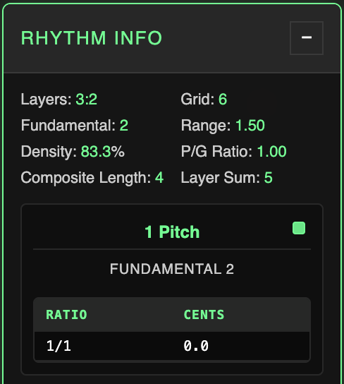
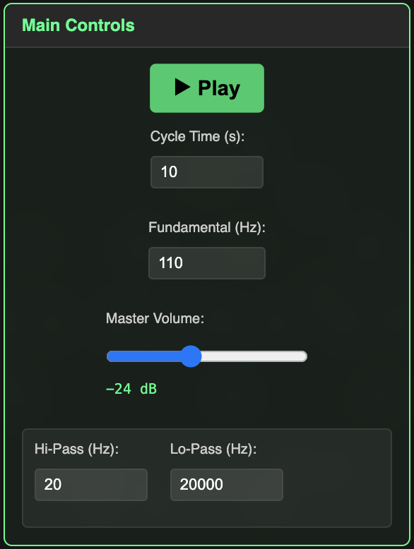

Overview
The Large Rhythm Collider is a multifaceted apparatus designed for the analysis of Polyrhythms.

The Large Rhythm Collider offers a suite of analytical and creative tools which parse the fine details of polyrhythmic structures and deploy this information as the source code for a range of audiovisual applications. This intersection of art and mathematics possesses intricate, emergent beauty all generated by simple properties of cyclic division.
On the main page, you'll find 5 draggable, expandable control modules: Rhythm Input, Rhythm Info, Visualizations, Playback, and Search Algorithms. These sections provide full control of the LRC's functionality.
The LRC is designed to analyze polyrhythms of up to 4 layers. These ratio layer combinations a:b:c:d are bound by a simple multiplicative logic which encodes the internal structure of each rhythm.
The core algorithm, while detailed, is simple arithmetic. The limitation to 4 layers is both a drummer's analogy and a computational consideration to keep the internal architecture manageable.
In their simplest form, polyrhythms occur when a cycle of time is divided by multiple layers of equal pulses.
Let's say we take an analog clock and draw a red dot every 15 minutes and a blue dot every 20 minutes, beginning from 12 o'clock. The resulting pattern will show 4 equally spaced red dots and 3 equally spaced blue dots within the hour - a polyrhythmic relationship of 4:3. Polyrhythms describe relativistic ratio relationships between pulse / grouping sizes (15 and 20 minutes in between dots) and frequencies (4 red dots, 3 blue dots).
As a drummer, I became interested in the essential logic behind this concept organically, through years of playing and exploring subdivision, meter, and form. Practice routines and improvisatory tools inspired thought experiments which led me down the rabbit hole to the architecture of this program.
There is something about the language of ratio and polyrhythm that feels deeply essential; the internal coincidences of patterned events, the overlapping routines and demands which dictate how we spend our time and the consequential emergence of unpredictable new opportunities and trials… Don't worry, that's as metaphysical as I'll get!
The project source code is available at https://github.com/aqldrum/Large-Rhythm-Collider.
Mathematical Foundation
The Large Rhythm Collider employs a simple, naturally emergent algorithm to describe the composite structure of any given polyrhythm, but the real novelty is in the subsequent serialization of this polyrhythmic DNA into musical tuning systems.
The following explanation is detailed, but some background research regarding rhythmic subdivision and meter, polyrhythms, the harmonic series, tuning and temperaments, just intonation, and the general physics of sound will help everything click.
Core Concepts
Up to four frequency layers are defined a:b:c:d. To be a valid polyrhythm, the layers must be coprime as a set (share no common factors), and no layers may be direct factors of another. However, individual layer pairs or tuples may share common factors.
For example, 8:7:6:5 is valid because while 8:6 share a common factor, the entire layer set is coprime thanks to the 7 and 5.
8:7:6:4, on the other hand, would be invalid: the 4 adds no new information to the rhythm as it is already described by the 8. Note also that a layer value of 1 merely represents the entire cycle undivided.
The LRC still allows for layer values that do not meet these criteria, but Search Algorithms will only return valid results.
The least common multiple of the layer frequency values is the Grid, which is the length of the total cycle for this polyrhythm. When we divide the Grid by each of the layers, we get the grid duration or grouping size of each of those layers' pulses.
Note that "polyrhythm" and "polymeter" are shown to be two sides of the same coin. Polyrhythms (frequency layers) are described by stacks of differently sized meters (grouping sizes). This fundamentally relativistic relationship of two interdependent dimensions is what truly dictates the deterministic, yet mysterious behavior of polyrhythmic systems.
When we construct a flattened list of all multiples of grouping sizes (pulse durations) up to the Grid value, we get the attack positions of every note in the Composite Rhythm.

By analyzing the pulse layers as one whole, we extract their synergy. If we take the difference between every position in the composite rhythm, we get the Spaces Plot - the unique series of durations encoded specifically by the interference pattern of the layer inputs.
We also track which layers generate which values in the spaces plot. This sequence is always a palindrome, as a consequence of its cyclic, multiplicative construction: notice below that the sequence reflects around the two 60s in the middle.

From here, we move to the core innovation of the Collider concept: serialization of the spaces plot into pitch information!
Scale Creation
Just as the generating layer values represent ratios of frequencies, the unique slices of time generated by their interference patterns can also be assessed by their relative size and speed relationships.
If we think of each of the spaces plot values as the length of a period of a sound wave relative to all others in the set, we extract a tuning system! This is the conceptual leap, though grounded in the ratio logic of polyrhythmic and harmonic series behavior.
Essentially, the polyrhythm's structure encodes various little segments of time, all measured in relation to one another on the underlying grid. If we use all of those little segments to define the literal sizes of sound wave periods, that group of sound waves will create a pitch set of relative frequency relationships, described by the ratios of their sizes.
|  |
Here's the simplest example - 3:2. This rhythm has a grid of 6 and is comprised of three groups of 2 and two groups of 3. We have a composite rhythm 0, 2, 3, 4 (6) which gives the spaces plot 2, 1, 1, 2 (we include the distance from 4 to 6, the beginning of the next cycle). Two unique values, 2 and 1. What ratio relationship does this give us? |
We have a sound wave with length 2, and a sound wave with length 1. It's easy to see that we'll have two ones for every two - the shorter sound wave has a frequency of 2/1 relative to the largest sound wave in the set.
2/1 is exactly equivalent to an octave. So our tuning system really just has one note, which is repeated an octave higher. Try inputting 3:2 and playing it back to hear what this sounds like when we apply the proper pitches to corresponding note sizes in the spaces plot.
Notice the inverse behavior when we convert ratios from size to pitch: 1/1 is 2 units long, 2/1 is 1 unit long. The larger the value, the lower the pitch; larger values represent longer intervals between waveform cycles.
How does this work with a more complex rhythm? Let's try the first four primes - 7:5:3:2.
The LCM or Grid for these numbers is 210, with grouping sizes 30, 42, 70, and 105 respectively. Arranging the composite rhythm and finding the difference between each position gives us this spaces plot:
30, 12, 18, 10, 14, 6, 15, 15, 6, 14, 10, 18, 12, 30 - notice we still have a palindrome. The unique values are 30, 18, 15, 14, 12, 10, and 6.
Note that the largest value in the spaces plot set is always the first and last. It's the grouping size of the fastest layer: because this layer is the fastest, it is always the first to occur after the downbeat, and because it continues repeating with the same duration, no value in the plot can possibly be larger.
In fact, the spaces plot may be segmented into groups which all sum to fundamental 30, or any of the other grouping values.
As the largest value, it defines the longest or slowest oscillation of a sound wave - meaning the lowest pitch. This value is our Fundamental: it becomes the numerator against which all other ratios are compared as an undertone. The Fundamental is always the quotient Grid / Layer A.
The smaller the value is, the faster the wave and the higher the pitch. This is why the Fundamental or largest value becomes an undertone generator.
Take 30 and 18. First we can cancel out the shared factor of 6, leaving 5 and 3. Now, we know there will be five threes for every three fives.
This means that wave 18 will cycle 5 times for every 3 cycles of wave 30.
That means wave 18, which is the higher of the two pitches, is tuned to 30/18 or 5/3 above the Fundamental. We saw the same inverse behavior from 3:2.
All other unique values will initiate the same undertone comparison, generating the full pitch set.
Try 7:5:3:2 on the main page and you'll see a five-tone scale: 1/1, 15/14, 5/4, 3/2, and 5/3.
The octave 2/1 may or may not be present in any given spaces plot, but we never include it in the final scale.
The final principle we apply to scale creation is octave compression - displaying all values within one octave. For tone row playback, we preserve the proper octave for each value, but for legible display of the tuning system, we compress all values in between 1/1 and 2/1.
Take the above 7:5:3:2 spaces plot: for 30/12, for example, we would simply move this frequency down an octave by halving it, multiplying the denominator by two and thus giving us 30/24 which simplifies to 5/4.
This also means that while every unique value in the spaces plot defines a unique octaviated interval, direct doubles (like 12 and 6 in this example) will create the same pitch in the final scale after octave compression.
Tuning Systems
The serialization algorithm creates scales of ratios with corresponding cents values. In microtonal music theory, ratio-based or harmonic-series-based tuning approaches fall under the umbrella of Just Intonation.
"Microtonal" tuning refers to any system which formally includes pitches not available in standard 12-tone equal temperament (12TET), which divides the octave into twelve equal partitions. Cents measure pitch space as it relates to 12TET: 1200 cents equals one octave, 100 cents equals one semitone.
In contrast to goal-oriented tunings like 12TET or sophisticated just intonation systems, the Large Rhythm Collider's methodology is somewhat mechanical and brutal; nonetheless, the deterministic bounds of the essential rhythm math bear curious strengths thanks to the breadth of available inputs and their emergent generative behaviors.
Conclusion
The kaleidoscopic inner worlds of polyrhythms are made mappable and musical through the core analysis and sonification algorithms. The spaces plot conversion via relative waveform period is the driving math of the Large Rhythm Collider serial concept. Frequency layers become pulse "arpeggiators" of their rhythms' bespoke tuning systems, washing over one another in blurred counterpoint.
The opaque prime factor relationships between layer / grouping values running through the multi-step scale creation algorithm create results with a degree of entropy that implores deeper analytical methods. While invented for its musical utility, the LRC tuning concept is in actuality a detailed scaffolding for relative complexity analysis of polyrhythms based on the granularity of their internal structures.
Some of the visualizations experiment with applications outside of the musical realm. The engine's larger purpose is to compile polyrhythmic data into a unique, natural procedural generation system with widespread potential for application.
Key Features
Usage
Numbers go in, patterns and music come out. Use up to four whole numbers in the Rhythm Input section to define a polyrhythm. Pressing Generate prepares the system with that rhythm.
Access metrics in Rhythm Info, try different Visualizations, find results with Search Algorithms, and Playback audio synced to the rhythm's internal timing and tuning systems. You can also browse and vote on a shared Collections database of rhythm results submitted by users.
The following sections include detailed descriptions of all features.
Core Functionality
- Polyrhythm input and processing (up to four layers): enter up to four frequency layers and generate the full analysis.
- Composite rhythm generation: automatically calculate all attack positions across all layers.
- Spaces plot calculation: derive the palindromic duration sequence.
- Automatic scale/tuning system derivation: produce just-intonation tuning systems from rhythm structure.
- Interconsonance analysis: reveal familiar-sounding intervals within the generated scales.
- Real-time audio playback: wavetable synthesis with full ADSR and filter control.
- Five visualization modes: Linear Plot, Reflections, Centrifuge, Hinges, and Collider Battle.
- Four rhythm-finding search algorithms: Layer, Grid, Fundamental, and Inverse PG searches.
- Collections database of anonymously-submitted results for Playback and Visualizations
Collections


The Collections database stores polyrhythms which users can submit anonymously with a vote for Playback or Visualizations. If you generate a rhythm you like, add it to Collections and help grow the database!
You can browse rhythms in either category and immediately Apply them to the main rhythm input. In the Vote tab, you can submit your current rhythm or vote on existing rhythms in the database.
Rhythm Info / Expanded Info View
The Rhythm Info panel displays the relevant metrics and ratio scale for any generated rhythm, as well as the Interconsonance Analyzer and export functionality. Double-clicking the panel opens an Expanded Info View with more detail.
Metrics

Rhythm Info displays the Layers, Grid, and Fundamental values for this rhythm-scale (recall that the Fundamental is the grouping size of Layer A), along with a few other metrics:
- Range: quotient of the fastest over slowest layer.
- Density: percentage, quotient of layer sum over grid.
- P/G Ratio: decimal, quotient of layer sum over grouping sum.
- Composite Length: unique positions in composite rhythm.
- Layer Sum: sum of all layer frequency values, distinct from composite length due to nested ratios and the coincidence on the downbeat.
Range describes the literal frequency range of the polyrhythm layers - rhythms with smaller range values are more tightly packed.
Density percentage tells us "how much of the grid is covered by the rhythm?" Layer Sum is used instead of Composite Length to give credence to the full weight of all frequency layers.
High-frequency nested ratios can cause higher density by adding frequency values while constraining growth of the overall LCM.
P/G ratio is a subtler metric that weighs the overall sum of the frequency values against the sum of the grouping sizes which create them. Higher density rhythms tend to have a higher P/G ratio. Rhythms may also have a P/G value of 1 - see the Inverse PG section in Search Algorithms.
One special metric, Average Deviation, only applies to 12-tone rhythm scales. This metric relates our microtonal just intonation scales to 12TET. Frequency relationships in 12TET are not rational, which means equal temperament cannot be replicated by the LRC's ratio scales.
Average Deviation is calculated by determining the intervallic cents distance from 100 between each successive step in our scale. 100 cents is the size of each step in 12TET.
For example, a 79-cent interval has a deviation of 21 cents, while a 105.6-cent interval has a deviation of 5.6 cents. We take the average of all 12 deviation values to yield the final metric. How low do you think this value can get for a 12-tone scale?
If you still need more numbers, you can expand the Spaces Plot or Composite Rhythm sections to view the actual sequential source code of the given rhythm.
Double-clicking Rhythm Info opens Expanded Info View, which keeps your current visualization resized to the upper right quadrant of the screen. EIV shows the same metrics as Rhythm Info, but it also includes the grouping sizes for all layers and a section called Nested Ratios.
Nested Ratios
Valid polyrhythms must be coprime as a set and have no layers which are direct factors of another layer. When only two layers are present, they may not share any factors. However, for three and four layer rhythms, common factors amongst layer tuples are allowed.
These inner factor relationships provide specific classes of results by constraining scale size growth despite grid growth, thanks to nested resolution patterns within the larger cycle: nested ratios. Even a simple rhythm, like the page default 8:7:6:5, has a nested ratio of 4:3 occurring twice between layers 8:6 (A and C). That's why the Nested Ratios section for this rhythm shows 2x A:C 8:6 = 4:3.
Interconsonance


The final analytical component of the Info panels is the Interconsonance Analyzer. Just like the Average Deviation concept, the ICA is a bridge to the familiar sounds of 12TET.
While the Average Deviation metric calculates the intervallic distance between sequential steps, the ICA calculates the full interval matrix of all available interval pairs in the set. For a 12-tone scale, there are 66 pairs (12 choose 2).
All interval pairs are then assessed for "consonance", which in our system is defined as a +/- 15 cent window from a multiple of 100 cents. Intervals meeting this criteria are relatively close to the familiar 12TET intervals most of us are used to.
The analyzer then finds subsets of ratios within the rhythm which all mutually share consonance and organizes them into Consonance Families.
The number of available unique pairs can grow very large, so this feature may break down for very large scales, but it can still comfortably handle scales with 100 pitches per octave.

Export

The export section allows the user to export a PDF with the Expanded Info View details for the generated rhythm. The user can also export MIDI and tuning file information, described in the Audio section.
Playback
The LRC has a detailed playback system for its tone rows, as well as all necessary export functionality to generate the tuning systems and individual layer MIDI for use in a DAW.
To add drums, double-click the section title bar to open Partitions.
Main Controls
|  |
Controls
The seconds value defines the length of the entire cycle - play ultrafast rhythms or stretch them out to long legato scales. Cycle Time accepts values up to 6000 seconds, with a dynamic minimum to ensure audio safety. If Scale Selector is in use, cycle time can be pushed as low as 0.1 seconds. The Fundamental input accepts Hz values between 55 and 880 Hz. The Master Volume slider has a final limiter. Despite the limiter, be cautious when playing unfiltered sine waves at high volumes. Filter provides global frequency thresholds for hi / lo-pass. Harsh high frequencies are automatically culled from playback, which is why you may hear occasional gaps for very small spaces plot values. |
Layer Controls

|
Controls
The LRC offers extensive DAW-like control over individual layer audio. Layers can be soloed, muted, or have their volumes set individually. Basic waveform synthesis offers sine, triangle, square, and sawtooth waves, along with an individual ADSR envelope and simple hi/lo-pass filter for each layer. The ADSR knobs can be double-clicked to manually edit their values. Legato mode is a global control which toggles retrigger behavior: when legato mode is off, each new note in the spaces plot silences the previous note. In legato mode, notes on each layer are held out until that layer sounds again. This allows you to hear the harmonic tuning relationships within each system sustained at slower tempos. |
Scale Selection

|
Controls
With Scale Selection you can select and deselect pitches in real time to create smaller subsets of the larger tuning system. Toggling pitches in Scale Selection also toggles them on and off in the Linear Plot, helping you visualize what you add and subtract as you hear it. If Interconsonance analysis has been run in the Rhythm Info panel, individual interconsonance families can also be automatically selected in Scale Selection. |
MIDI Export by Layer
- Export MIDI with proper tone row sequencing for each layer.
- Resize or repurpose the MIDI clips in your DAW.
- Pair with tuning files to preserve the true tuning information.
Because of the intense level of subdivision inherent in the growth of Grid values, dealing with MIDI can be tricky. When you export MIDI from the web app, you'll get large clips for each individual layer with each note in sequence according to that layer's portion of the tone row. If you wish to hear the layers with their true polyrhythmic relationships, you'll need to resize the clips to the same interval of time (say one to eight bars). Otherwise, the MIDI is yours to experiment with - as are the tuning systems.
.tun / .scl Tuning File Export
- Microtonal tuning file export for .tun and .scl formats.
Playback of microtonal tuning systems in the box requires a software synth that can read tuning files. The LRC has export options for two common tuning file formats, .tun and .scl. Scales exported with .tun have their root note at MIDI note 9 (lowest A), while scales exported with .scl are rooted around C.
If you need other tuning file formats, I strongly recommend Sevish's Scale Workshop.
Partitions
You can't have a Large Rhythm Collider wihout some drums. Partitions offers a high level of control through a sample-based Euclidean sequencer designed specifically for our 4-layer polyrhythms.
Visualizations
The LRC offers five visualization types. Some directly sync with playback, while others are purely visual. Reflections and Collider Battle open their own popups.
Linear Plot

- Primary visualization graphs palindromic sequence of spaces plot values.
- Layers are denoted by toggleable colored lights.
- Lights illuminate in sync with playback.
- Connectors show individual layer sequence.
The Linear Plot is the original visualization concept that led to exploring various applications for the polyrhythmic source data. Playing with the initial layer inputs can create a wide range of patterns, all bearing a Rorschach-esque horizontal symmetry due to their palindromic construction.
All layer lights may be toggled off with the lightbulb switch. You can view individual layer sequences by selecting any of the ABCD layer toggles. You can also press the Chain button to connect the notes for each layer in sequence.

The Linear Plot and its layer lights sync to playback. It also responds to Scale Selection from the Playback panel, hiding notes which have been turned off. This allows you to hew more minimal audiovisual designs from the larger rhythm structure.
You can use the green arrow toggle in the bottom right-hand corner of the plot to flip the vertical axis. This allows for more intuitive visual sync with audible pitch information during playback; since smaller values correspond to higher pitches, the default view places these values lower on the y-axis, which can feel counterintuitive.
Mousing over any individual Node in the plot will reveal a popup with key details for that node. The popups show the ratio associated with this node, its length in the Spaces Plot, and its source layer or layers and its position in their individual progressions. You'll also see the node's overall position in the rhythm progression: its position in the overall node sequence, its Composite Rhythm position value, and the position's percentage relative to the overall Grid cycle.

Reflections (popup)

- Duplication and manipulation of inherent palindromic structure creates detailed symmetric patterns.
- Various controls allow for different levels of reflection and tessellation.
- Basic animation options.
- Export functionality for still images or animations.
Reflections grew out of the observation that the inherent horizontal symmetry of the Linear Plots would create distinct mandala-like patterns if they were duplicated and reflected over one another with increasing axes of symmetry. The Reflections popup has five main sections: Reflections, Tessellation, Animation, Colors, and Export.
Reflections Controls

- Type Selector offers Overlay and Reflecting Pool. Overlay draws each subsequent reflection directly over the layers below it. Reflecting Pool draws the first reflection (level 2) above a horizon line drawn at the top of the original graph, creating a mirror or reflecting pool visual. Subsequent levels are overlaid as in Overlay.
- Blend Mode offers Difference, which creates interesting color shifts during animation, or Screen, a simpler and less computationally expensive overlay.
- Reflection Level allows up to four plot duplications, each reflected over new lines of symmetry (180, 90, 45 degrees).
- Dot Size resizes dots.
Tessellation

Tessellation allows the user to create up to a 4x4 tessellated grid of the Reflections image.
Animation

- Master time control sets animation speed.
- Rotate the image around the center to see the symmetric structure shifting and phasing.
- Translate the image in four directions, with or without simultaneous rotation.
- Background plot toggleable to view rotation or translation with no blending.
Colors
- Set colors for main plot, background plot, and canvas background.
- Color picker includes HSB sliders, hex codes, or RGB values.
Export Visualization

- Export square PNG images of Reflections plots to your chosen dimensions.
- Video export available (web encoding capacities are somewhat limited).
- Set dimension, frame rate, and cycle time for animation.
- Enable rotation, translation, or both.
- Smart algorithm assesses level of duplication to reduce frame render counts.
- Progress bar tracks render and encoding phases.
Web encoding works best with simpler visualizations; complex plots with Difference blending may show quality reduction.
Centrifuge


- Layers visualized by spinning wheels.
- Scale ratios displayed around perimeter.
- Laps sync with tone row playback.
- Perimeter ratios light up in sync.
- Inner segments illuminate as layers rotate.
- Toggle layer discs on / off
- Ratio ring responds to scale select
The Centrifuge visualization displays each layer as a spinning wheel. The radii of each layer correspond to the layer's grouping size, and their rotation speeds correspond to their frequencies.
Individual segments illuminate in sync with playback as their notes ring out. The perimeter also displays the ratios in the current scale, illuminating in sync with playback.
You can select / deselect layers to show / hide their individual discs, and pitches chosen in Scale Selection will be reflected around the ratio ring.
Hinges

- Physical simulation generating structure and vector information from the spaces plot.
- Spaces plot values form links in a chain.
- Controls for cycle speed and amplitude of layer vector forces.
- Toggleable layer forces display.
- User changes individual layer vector directions with arrow keys.
- Three modes with different animation approaches.
- Anchors mode allows for expansion behavior and deep control based on nested ratios.
The Hinges visualization uses the internal rhythmic structure to generate a physical simulation. Each value in the spaces plot defines the length of a segment in a chain, linked end to end upon starting the animation and bound with an internal constraint system.
The source layer for each node and the corresponding value in the spaces plot defines a direction and magnitude for a motion vector for each node. The user can set the direction for each layer individually by clicking each arrow and pressing an arrow key for a new direction. Three Hinges modes utilize this layer force progression:
Layer Progression
Layer Progression triggers the layer forces one by one according to the overall cycle time and amplitude multiplier. Set the cycle time very short with high amplitude to see the structure swim around wildly. You can also view the vector force matrix with the Layer Forces toggle.
Mirrors
Mirrors executes the layer forces in a mirrored pattern, moving in opposite directions from the central node. This aligns with the palindromic nature of the Hinges construction.
Anchors
Anchors offers more structural control. Lock certain nodes in the structure, either based on their generating layer or based on nested ratios calculated between the polyrhythm layers. Anchors also offers Expand functionality which inflates the hinge structure to its maximum extent.
Tension
While using any of the three modes, engage Tension to freeze layer progression and prompt each segment in the structure to seek a flat angle with its neighbors. This slows everything down and creates a twisting screensaver-like pattern.
Collider Battle (popup)
- Multiple hinge rhythm structures battle it out.
- User generates up to four starting polyrhythms.
- Each rhythm is animated according to hinges vector animation principles.
- Rhythms dance and collide; node-to-segment collisions cause the defending player to lose that segment.
- Actual scale ratios sound out as segments are destroyed.
- Battle progresses until only one player remains.
- User can control cycle speed, force amplitude, line thickness, and audio volume.
After developing Hinges the natural question was: what if these things could fight? The Collider battle lets multiple hinge structures dance around the scene, their nodes and segments colliding. Players can create their own rhythm with a Linear Plot preview on the Player Creation screen.
Your HP is your Grid value, and your Nodes value corresponds to the number of unique positions in your composite rhythm. Press the Lock button to lock in your player.
In battle, if an attacking node strikes a player's segment, that segment is destroyed and its corresponding value is removed from the spaces plot and the layer force progression for that rhythm. Rebound force is applied in the opposite direction of the attacking node's vector, with amplitude defined by the layer force at that node and the global multiplier. After losing a segment, a player enters a brief period of invulnerability as their structure rebuilds itself.
The segments also sound out according to their actual note in their rhythm's tone row. A player is eliminated when all of their segments have been destroyed - last player standing wins. Gravity eventually kicks in and pulls players towards the center. Master controls influence cycle speed, force amplitude, line thickness (for visibility of large rhythms), and audio volume.
Due to the computational expense of force progression, collision detection, and structural reconnection for multiple large rhythms, the Collider battle has a much lower ceiling on complexity than, say, Linear Plot, but you can still create dynamic battles with smaller rhythms.
Search & Analysis

A large part of the impetus to develop an engine for the Large Rhythm Collider concept was to enable the discovery and classification of rhythms at a much faster rate than working by hand. The engine offers four types of search algorithms targeted at specific essential metrics, using global constraints of scale size, search time, and range to generate results. These searches also provide scaffolding for the organization of polyrhythms into larger interconnected sets, with their own properties and emergent hierarchies.
Pitches introduces the concept of sorting the rhythms by scale size. Searching for 12-tone scales is a particularly interesting "goldilocks" zone given the connection to 12TET, but various scale sizes produce different results worth exploring. You can omit the Pitches parameter to get rhythm results with any number of pitches per octave.
Recall that Range is the quotient between fastest and slowest layer. This qualifier allows you to weed out high-range results should you choose.
Because these searches brute force large numbers of combinations, the system uses a Max Search Time interval. Some searches can continue to yield new results more or less indefinitely. Searches may need to be carried out over multiple intervals, so results are allowed to accumulate until the search parameters are changed or the results are cleared.
The spinner animation lets you know when a search is being performed. When results subsections are populated, you can sort the tables by any of the columns, except Action. Clicking Apply for any result automatically sends that rhythm through the main generation pipeline.
The search section minimizes result clutter by weeding out entries with duplicate grid + fundamental + ratio sets to an already-found result, but you can still view these results in the developer console logs.

Rhythm Layer Search
Find results based on a given value for one of the four layers. Searches with a Layer A value are always completable; searches with no upper range limit and a value for any layer slower than A might be indefinite.

Grid Search
Find rhythms with a specific grid value, according to global parameters. Always completable; some grids (like primes and numbers without many factors) may have no results.

Fundamental Search
Find rhythms meeting global parameters with a specific fundamental value (grouping size of Layer A). Absent a range constraint, these searches are generally indefinite, as fundamentals can continue to propagate, reaching higher multiples in grid space and relying on nested ratios to constrain scale size.

Inverse PG Search
A unique search which finds a special class of polyrhythm: those whose pulse (or layer frequency) values are a direct inverse of their grouping sizes. Any two-layer rhythm (meeting proper coprime requirements) will meet this qualification - say 3:2, three groups of 2, two groups of 3.
Not all three and four-layer rhythms meet this criteria, but some do. Take 85:51:45:27 for example: its layer frequencies are 85, 51, 45, and 27 while the corresponding grouping sizes are 27, 45, 51, and 85 respectively. Remember the P/G Ratio metric? Inverse PG rhythms have equivalent layer and grouping sums, yielding a P/G ratio of exactly 1.

Example Workflows
This system is a lot to take in at first. In no particular order, here are some of my favorite things to do with the LRC:
Test various layer combinations to see how different values affect metrics, scale size, ratio composition, and visual Linear Plot patterns.
Playback rhythms and solo each layer, to listen for any neat arpeggiation patterns. If something grabs you, add it to Collections.
Mix waveforms with filter settings to experiment with timbre and hear the individuality of each layer more strongly in the composite.
Slow playback down with a long cycle and use legato mode to hear sustained harmonies.
Run Interconsonance Analysis on a large scale. Then, select various consonance families in Scale Selection during playback to hear more minimal subsets of the larger tone row.
Isolate clusters of pitches near certain cents values for large scales in Scale Selection. These tiny tuning discrepancies create subtle color shifts during playback.
Exporting midi and tuning files opens up all sorts of possibilities. You can improvise with the tuning systems and look for interesting melodies and harmonies unconnected to the actual tone row progression.
Apply chance, combine different tone rows, sample and chop them up. You could also use the tone rows without the tuning files, getting an equally-tempered version of each tone row. No rules here!
Reflections can produce some pretty dense and intricate patterns. The Difference blend mode creates neat phasing patterns when animated. Increasing Dot Size creates more overlap which leads to even more intricate blending.
Drive Hinges with fast cycle speeds and high force amplitude to coax wild, swimmy behavior out of the structure.
The tug-of-war between the Hinges physical constraint system, layer force progressions, Tension, and Anchors' Expand feature and locking mechanisms have some interesting behavioral interplay.
Collider Battle is a lot of fun to watch as the rhythms perform their bizarre martial arts, accompanied by their internal soundtracks. You might quickly realize that small changes between layer values can create players of vastly different size and HP. When players are balanced, battles often go down to the wire.
Search Algorithms can help you make sense of the numbers. You could generate multiple scales with the same Layer A value, for example, and compare those layer arpeggiators to find odd new harmonies.
Inverse PG rhythms also tend to have nice audiovisual attributes as well, and they represent a rather interesting, rare class of results.
Limitations
All systems run fairly smoothly, but computational expense increases as the rhythms get bigger. You can enter any values you like into the main input and expect normal rhythm metric generation and playback to work even with layer values in the 4 to low 5 digits; however, your machine may not be able to properly render, say, a Hinges structure with tens of thousands of individual nodes, or display a scale with hundreds of tones cleanly around the Centrifuge. Search Algorithms for large values may also take a long time to yield results. There may be room for improvement in the speed of the search algorithms generally.
Web encoding for Reflections animations currently works best with simpler visualizations; quality reduction occurs with high complexity or expensive blending.
Collider Battle can also be buggy when trying to simulate large rhythms; collision detection may break down when increasing Line Thickness to high levels. The battle simulation tends to work best with simpler layer inputs in the double digits and below.
Accessibility
The Large Rhythm Collider interface is structured with semantic landmarks, keyboard-accessible controls, descriptive labelling for custom widgets, and high-contrast defaults so it plays well with assistive technologies.
Because the engine allows extreme rhythm values, users can generate dense visuals or rapid motion that may exceed those defaults. If you encounter barriers or need alternative representations, please reach out at aqldrum@gmail.com so follow-up improvements can be prioritised.
Summary and Future Development
The Large Rhythm Collider engine begins with a rigorous generalized analytical framework for polyrhythms as we traditionally understand them, in their most essential ratio format. The five control modules then provide a host of audiovisual tools, simulations and data to accurately display and interpret these rhythms. The serialization of tuning systems and procedural generation of other visual and spatial dynamics generates a universe of delicately balanced, crystalline temporal structures. Results are deterministic but complex, opaque and unpredictable even with sophisticated analysis.
This preliminary effort implies a wider view, a broadening of scope, the development of a taxonomical understanding of how rhythms connect across Grid values, Fundamental generators and pitch constraints. The engine lays the foundation for a coherent approach to the grander organization, compilation, and adaptation of polyrhythms in large groups, utilizing the emergent hierarchical properties of the system's inherent metrics to build interconnected databases. Stay tuned for all of that! If you read this far and the project resonates with you or gives you any ideas, don't hesitate to reach out at aqldrum@gmail.com.
Credits
Special thanks go to Matthew Duveneck, my professor who generously translated early LRC concepts into R code, allowing me to begin computer-assisted system research.
I also thank my friend and musical colleague Jacob Shulman for great chats about mathematical context and development possibilities, along with audio experiments in SuperCollider.
I extend my heartfelt gratitude to all the friends and family over the years who have allowed me to yap about the LRC. Thank you for your support and curiosity, and for the chance to practice effective communication of the core concepts.